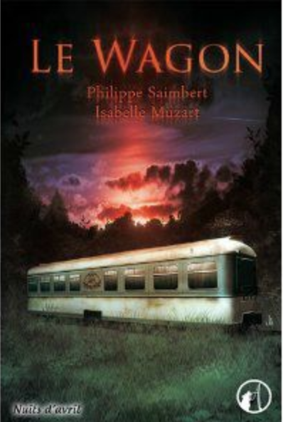
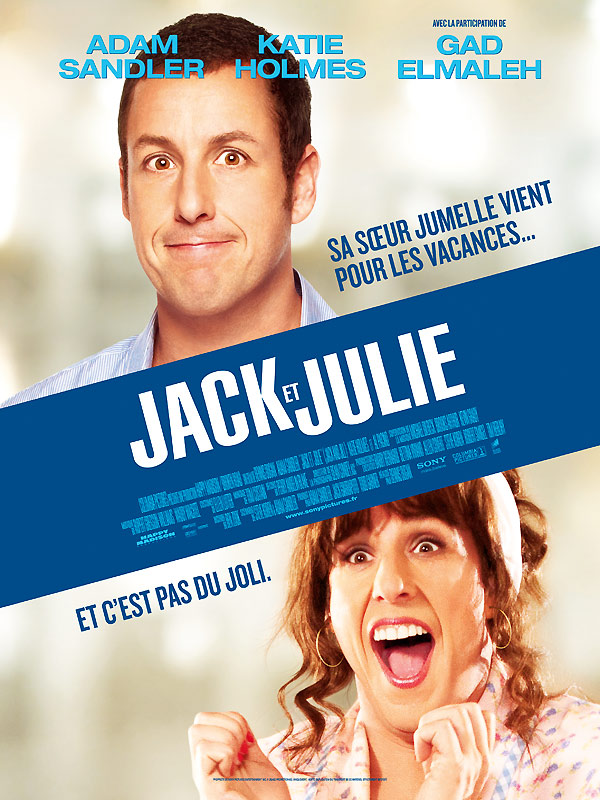
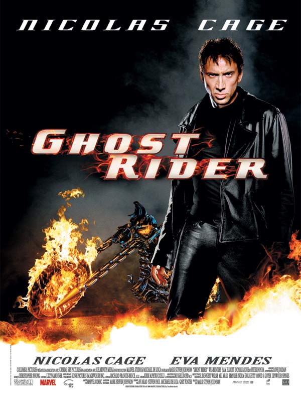

After 3 intensives months, Gabriel is the most brilliante Alumni ever. Chuck Noris him self, says that may be "this guys coould save the internet".
|  |
Le WagonAprès avoir répondu présent à une formation FullStack. Gabriel Ibanez, génie de seulement 31 ans, décipe de partir faire le tour de toutes les start-up du monde à bord de son train. Entouré de son Batch, le #batch 100, se groupe de mother fucker, deviendra le plus grand groupe de Rock de l'histoire |
|  |
Jack et JulieL’existence de Jack frise la perfection. Sa vie serait idéale s’il n’y avait pas sa sœur, Julie. Chaque année, son envahissante jumelle débarque pour Thanksgiving et lui pourrit la vie. Cette fois, la panique est d’autant plus grande qu’elle prolonge son séjour et s’installe pour un mois. Entre guerre des tranchées et chamailleries, le quotidien des jumeaux est explosif. Lorsqu’il devient évident que Julie ne compte pas repartir, Jack décide d’échafauder les plans les plus délirants pour la renvoyer à l’autre bout du pays. Et quand on dit qu’il est prêt à tout, il faut s’attendre au pire… |
|  |
Ghost RiderPour sauver son père victime d'un accident, le cascadeur Johnny Blaze a vendu son âme au diable. Mais ce marché a un prix qu'il ne tarde pas à découvrir : humain la journée, il devient le Rider la nuit, un chasseur de primes traquant les âmes échappées de l'enfer. Lorsque Roxanne est menacée, Johnny décide d'utiliser ses pouvoirs pour se retourner contre son Maître. |